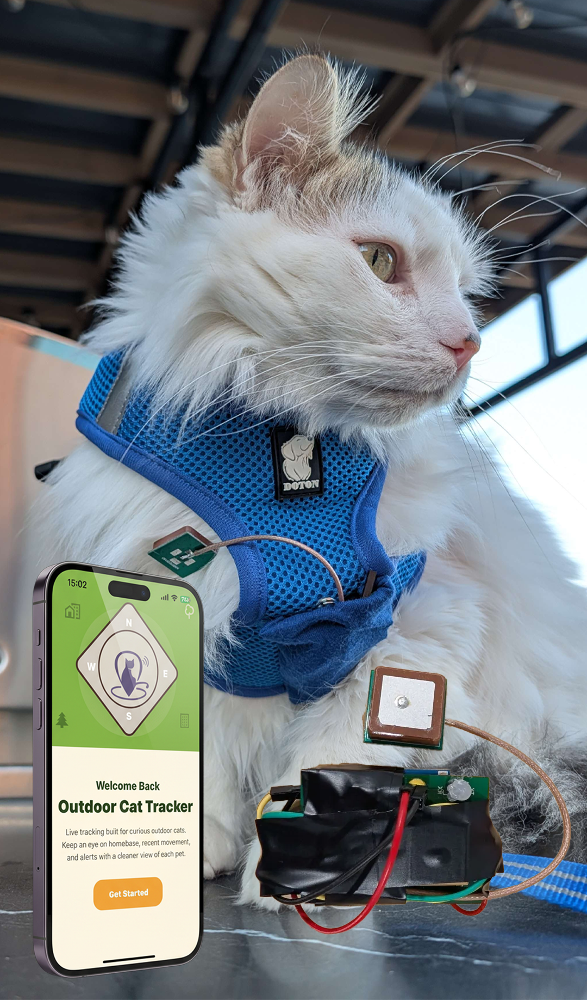
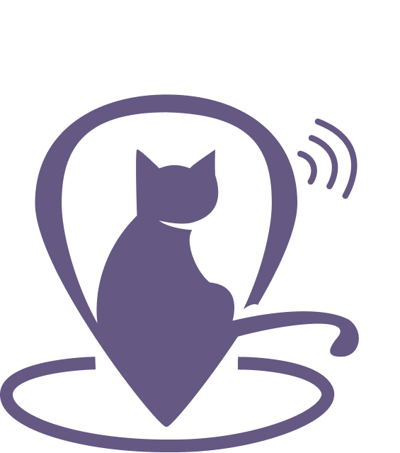
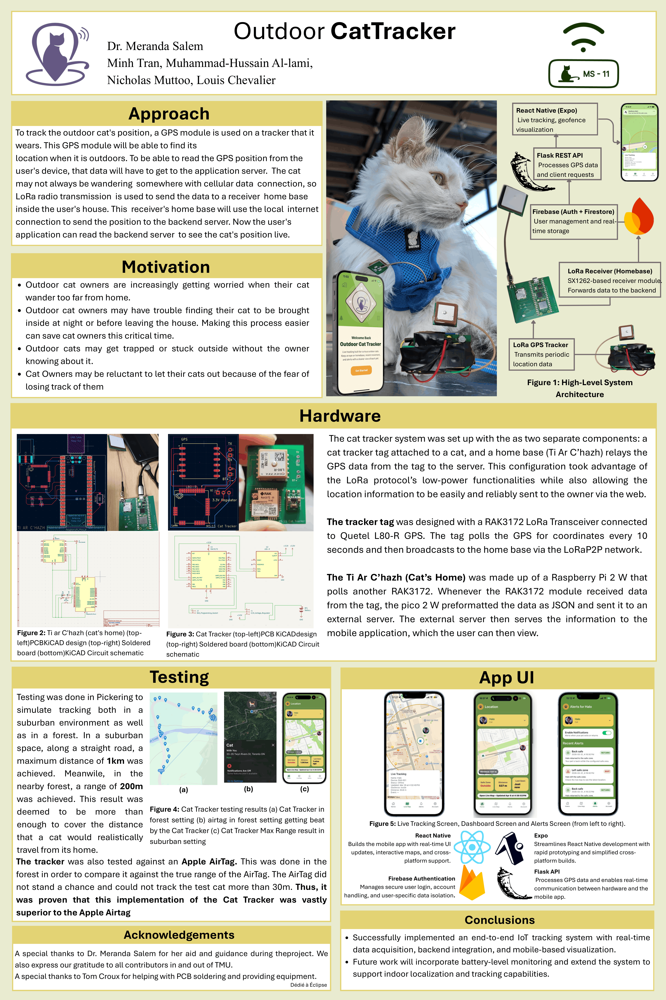

TMU Capstone Project
TMU Capstone Project
A smarter way to keep outdoor cats visible, safe, and close to home.
Outdoor Cat Tracker is a LoRa-based pet monitoring system that combines a lightweight GPS tracker, a dedicated home-base receiver, a cloud-connected backend, and a cross-platform mobile app for live map tracking and geofence alerts.
Best Tested Range
1.06 km
Tracker Weight
~35 g
Battery Runtime
~7.5 hrs


Outdoor Cat Tracker Production
A real cat, a real wearable prototype, and a complete owner-facing tracking experience.
This project started from a real story. One of our teammates, Louis, once lost a cat while visiting France and spent a long time trying to find him again. That experience shaped the way we thought about this capstone: not as a generic tracker, but as something that could give owners faster visibility, clearer alerts, and more confidence when an outdoor cat does not come back on time.
Visual Highlight: wearable tracker, mobile app experience, cat harness integration, and a more direct visitor-first presentation of the project.
Our Capstone Poster
TMU Capstone 2025-2026
Project Focus: LoRa pet tracking, GPS monitoring, home-base relay, mobile geofencing, capstone showcase.
To all visitors, our poster is the first entry point into the project. This section puts the capstone summary front and center before we can move into the deeper technical specification and timeline pages.

Team
Faculty Supervisor: Dr. Meranda Salem
We are a team of Computer Engineering students at Toronto Metropolitan University. Each person worked on a different part of the system, and the project only came together because the hardware, backend, and mobile app were built and tested side by side.
Muhammad Al-lami
Muhammad focused on the tracker hardware itself, from sensor selection and PCB work to antenna decisions and the power path that kept the wearable device compact and practical.
Louis Chevalier
Louis built out the home base side of the system, handling microcontroller integration, receiver firmware, and the relay behavior that moved LoRa data toward the server.
Minh Tran
Minh shaped the mobile experience, including the app screens, live tracking views, pet management flows, branding, and the visual presentation of the project.
Nicholas Muttoo
Nicholas handled the backend and API path, making sure incoming tracker data could be validated, stored, and delivered reliably to the mobile application.
Acknowledgements
Support that helped make the project real.
A special thanks to Dr. Meranda Salem for her aid and guidance during the project. We also express our gratitude to all contributors in and out of TMU. A special thanks to Tom Croux for helping with PCB soldering and providing equipment.
Deep Dive
Specifications
Review the full technical specification, architecture, performance data, embedded demos, image galleries, and project contact section.
Build Journey
Timeline
Follow the project from Fall 2025 planning through the Winter 2026 implementation milestones and MCR development phases.
Watch It
Demo Videos
See the prototype walkthrough, system behavior, and comparison material presented in the capstone showcase.